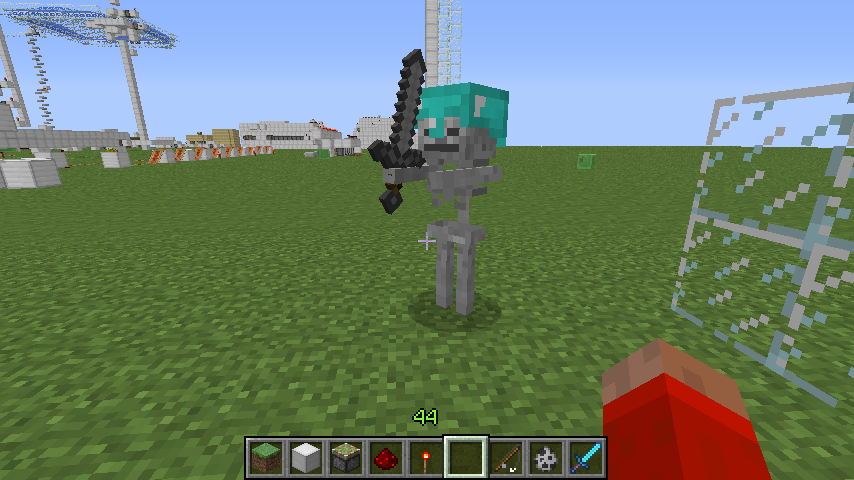
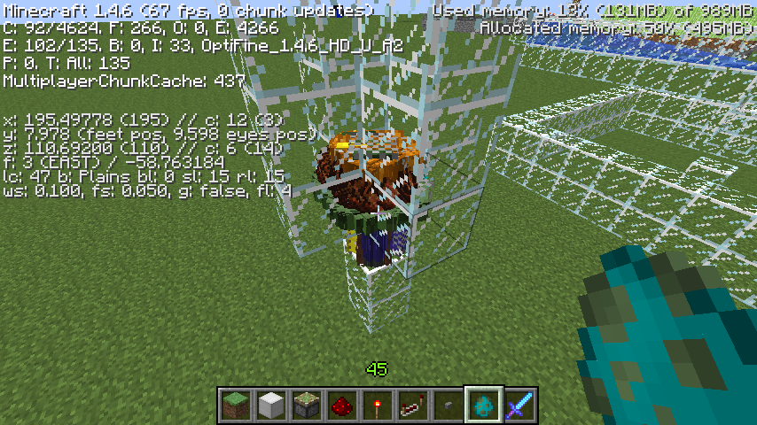
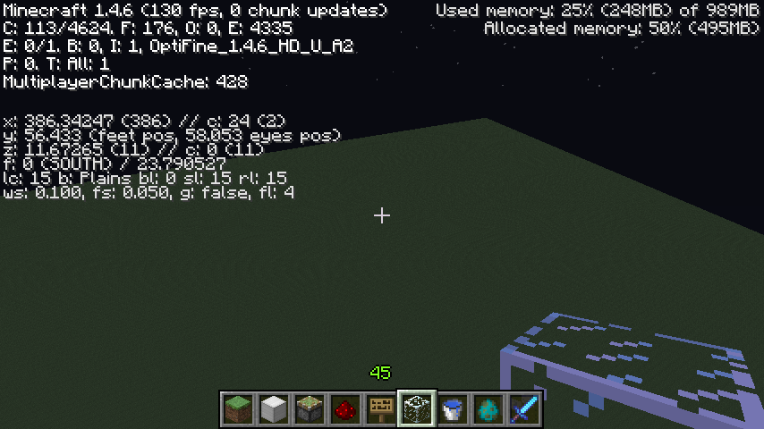

首页
上一页
161
162
163
164
165
166
166
167
168
169
170
171
下一页
末页
defanive2
无尽黑夜
14
连最后一只的金头盔都爆掉了。。
——来自 MCLive
10667楼
2012-12-27 09:22
defanive2
无尽黑夜
14
好吧，不管怎么说，接下来这些都是有拾取能力的怪物
一共有13只
——来自 MCLive
10668楼
2012-12-27 09:23
defanive2
无尽黑夜
14
把其中一只抓出来
然后扔给它一个石剑
——来自 MCLive
10669楼
2012-12-27 09:23
defanive2
无尽黑夜
14
然后换成石头剑了
但是没有把弓给扔出来
——来自 MCLive

10670楼
2012-12-27 09:24
defanive2
无尽黑夜
14
杀死之后，剑和头盔都给回来了
——来自 MCLive
10671楼
2012-12-27 09:25
defanive2
无尽黑夜
14
但是头盔的耐久降低了！
——来自 MCLive
10672楼
2012-12-27 09:26
defanive2
无尽黑夜
14
阳光会降低怪物身上的头盔耐久
即使是玩家喂的头盔也不例外
因此加上一层屋顶
——来自 MCLive
10673楼
2012-12-27 09:28
defanive2
无尽黑夜
14
又喂了2只骷髅
其中一只给了弓
——来自 MCLive
10674楼
2012-12-27 09:29
defanive2
无尽黑夜
14
给全部的骷髅都喂了石剑
只有1只骷髅返还了弓
——来自 MCLive
10675楼
2012-12-27 09:31
defanive2
无尽黑夜
14
杀死全部骷髅之后，头盔都受到了不同程度的损坏
然后我喂的一个胸甲完全没有说受到损坏
——来自 MCLive
10676楼
2012-12-27 09:32
defanive2
无尽黑夜
14
当然还有这只骷髅没有杀死
现在给喂一个钻石胸甲
看看能不能给金胸甲
——来自 MCLive
10677楼
2012-12-27 09:34
defanive2
无尽黑夜
14
但是没有给回金的胸甲
因此总结就是
给装备的确会有几率把骷髅原有的装备返还
但是几率非常低
——来自 MCLive
10678楼
2012-12-27 09:35
defanive2
无尽黑夜
14
当然这个特性也不是一无是处的
现在怪物在y=5处
——来自 MCLive
10679楼
2012-12-27 09:40
defanive2
无尽黑夜
14
接下来我们飞到高处
现在是y=172，离骷髅至少有128格范围了
因此骷髅应该会消失
——来自 MCLive
10680楼
2012-12-27 09:41
defanive2
无尽黑夜
14
但是事实是骷髅没有
由于玩家抱怨怪物“偷”走了玩家道具之后
怪物离开太远了导致怪物despawn，道具也消失了
为了避免这种情况，只要是带有拾取的东西，怪物就不会消失
——来自 MCLive
10681楼
2012-12-27 09:42
defanive2
无尽黑夜
14
这个特性有什么用呢
同样的设置，给一群怪物喂南瓜
PS 骷髅也可以，用僵尸只是个人喜好
而且天然僵尸刷怪笼比较好找
——来自 MCLive
10682楼
2012-12-27 09:47
defanive2
无尽黑夜
14
接下来就不断的刷僵尸
没有带上南瓜的僵尸就会掉下死亡
——来自 MCLive
10683楼
2012-12-27 09:58
defanive2
无尽黑夜
14
这样一直给僵尸带上南瓜
知道收集了至少90只僵尸
——来自 MCLive

10684楼
2012-12-27 10:18
defanive2
无尽黑夜
14
到了晚上就实现了神奇的效果了
——来自 MCLive
10685楼
2012-12-27 10:21
defanive2
无尽黑夜
14
没错，全世界都不刷怪了
如果大家有看我解析刷怪原理的帖子的话
就会知道有刷怪上限
一旦怪物数量到达了刷怪上限，就不会再出怪了
因此通过这种方法积累怪物，并且保证怪物不会消失
就可以保证不再刷怪
PS 当然这些怪物所在的chunk要在内存里面
——来自 MCLive
10686楼
2012-12-27 10:22
defanive2
无尽黑夜
14
这个在生存里面的应用就是
找到一个僵尸\骷髅刷怪笼后，只要刷足够数量的怪物
并且至少80个怪物带上南瓜头
只要这些怪物所在的chunk还在内存里面
玩家周围就不会刷怪
PS 普通世界的刷怪上限是79
加上一些刷出的怪物本身就有装备
大概要刷90个左右
——来自 MCLive
10687楼
2012-12-27 10:26
defanive2
无尽黑夜
14
chunk是否在内存中是根据视野而定的
远、中、近、极近的视野半径分别是16、8、4、2
也就是说，例如视野距离为中，那么以这些怪物所在的chunk为中心
只要主角在半径8个chunk的范围内都不会再刷怪
一旦离开这个距离，那么刷怪又会正常进行
PS 不再刷怪的感觉真好！
超平坦没有了史莱姆
——来自 MCLive
10688楼
2012-12-27 10:31
defanive2
无尽黑夜
14
而一旦离开视野距离
怪物所在的chunk在内存中被删除之后
刷怪又会继续执行
——来自 MCLive
10689楼
2012-12-27 10:33
defanive2
无尽黑夜
14
当然来还有一项测试值得进行
出生所在的spawn chunk总是在内存中的
把这些怪物运输到spawn chunk里面
这样的话由于这些怪物一直在内存中
是否可以做到整个世界都不刷怪呢？
——来自 MCLive
10690楼
2012-12-27 10:43
defanive2
无尽黑夜
14
运输中
南瓜大军
——来自 MCLive
10691楼
2012-12-27 10:44
defanive2
无尽黑夜
14
= =
——来自 MCLive
10692楼
2012-12-27 10:44
defanive2
无尽黑夜
14
最后终于运输到了
用玻璃标出的chunk就是spawn chunk
接下来就可以去试一下其他地方还会不会刷怪
PS spawn chunk周围的一些chunk也有一直保留在内存中的特性
但是具体范围还不清楚，没测试过
——来自 MCLive
10693楼
2012-12-27 10:49
defanive2
无尽黑夜
14
现在已经远离spawn chunk了
spawn chunk已经不在视野范围内
然而没有任何怪物刷出
因此这个想法是可行的
通过在spawn chunk堆积一大堆带南瓜的怪物
可以实现在整个世界都不刷怪
——来自 MCLive

10694楼
2012-12-27 10:51
defanive2
无尽黑夜
14
于是通过这种方法就可以做到非和平模式下不刷怪了
如果在生存里面的spawn chunk周围找到僵尸\骷髅刷怪笼的话
可以试一下做这个工程
花费大约90个南瓜+时间
就可以做到生存模式里面不再刷怪
PS 地狱和END里面是否也可以这样做呢？
地狱是无法做到的，由于地域没有spawn chunk
END有spawn chunk，是否可行未知，待测试
——来自 MCLive
10695楼
2012-12-27 10:56
defanive2
无尽黑夜
14
这种方法耗时需要多少呢？
刷怪笼全速运行大约速度是30秒出一组怪物，一组为1-4个
因此大约1分钟可以出5只怪物左右
有拾取能力的怪物出生率大约是25%（未经测试）
因此所需的时间为80/0.25/5=64分钟，也就是大约1小时
当然现在1.4之后，刷怪笼速度被降低了
因此预计时间会是1.5到2个小时可以完成
PS 这个是基于25%的拾取能力
至于实际的几率还有待测试
——来自 MCLive
10696楼
2012-12-27 11:02
首页
上一页
161
162
163
164
165
166
166
167
168
169
170
171
下一页
末页